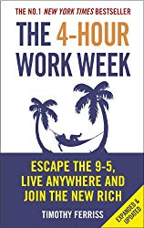

Study Plan!!!
by Shub Mishra (orion)...
As you all know many of us don't even read our daily books of syllabi, and as human psychological fact we all know we can concentrate on any thing for about 5mins or less and it's tough to read ebooks, book on phones ,pc or tabs ,sometimes you read and then there comes a pop-up notifying -"someone's has started following you" and many such more which almost distracts our brain and which in the end leads to stop of our reading.
I will tell you few things which will help you to get best of ebooks/books.
Point 1- Carry a pen and notebook/diary or pages where you can write.
Point 2- before reading turn off your internet and other applications.
Point 3-Before reading drink a glass of water which will help your brain in good oxygen content.
Point 4- Have some nuts or fruits which will help you from getting stressed eyes or body.
Point 5- Fix your time for how much minute you are going to read till then you don't have to
think of anything or do any work .(for that find a suitable place in your house where you can sit alone)
(tell your parents ,friends,and you family members not to disturb for that period of time).
Point-6 now start reading your book/ebook at the end of para recall what you have read ,try to
understand what's written their ,what it is conveying the message try to relate with your daily life.
(consider you are reading Newton's law then try to relate it with daily life like if you are traveling,or
play physical sports it would give better understanding and you will remember it for longer time).
Point 7-Write a short note of that paragraph for better revision in future.
At last in this world moving so fast people know to eat pizza and burger and to have coke but don't know how
to read and it's common mistakes in everyone's life.
And unfortunately we have never been taught how to read ,understand and implement not in school as well as in
colleges.
Life is so one and it's wonderful don't regret of what you have done mistakes in the past try to move on and
work on your present to improve your future.
Hope it would help most of the people .
My ambition from this post is to motivate people abould reading and motivating people to learn before earn.
Thank you
Orion
1."The Power of Your Subconscious Mind" by Joseph Murphy.The Power of your Subconscious Mind by Joseph Murphy is a wonderful book which gives insights how our subconscious mind works. In his simple language, he explained what we think is what we are, we are simply the product of our mind, We can achieve anything in our life what we desire, we just simply need to focus and train our mind that anything is possible.You can read more to know how are brain is wired and just explore the unlimited power of universe through brain. |
2."The Power of Positive Thinking" by Norman Vincent Peale.It is an excellent book. If you apply the principles mentioned in the book, you should be see measurable change in your life.Read it after the book - "THE POWER OF SUBCONSIOUS MIND" it really helps to implement the principles of the first book...!! |
3."Attitude Is Everything: Change Your Attitude. Change Your Life!" by Jeff keller.This is very nice book . If you will read it with full concious then you will get alot out of it . It's is a book which tells us how attitude matters in life . How a good attitude can make your life awesome . It is a very easy to understand book anyone can read it . It is Inspiration , motivational and life changing . |
4."The Magic of thinking Big " by David J Schwartz.This book is amazing. I first thought this book will be all about thinking big. but This book contains much life-changing advice. You will definitely love this book very easy to read this book. Don't wait just buy this book. |
5."How to Win Friends and Influence People" by Dale Carnegie .This book is a MUST read for anyone, but particularly if you are in management or sales. This book changed my life in the way that I interact with people. I would highly recommend this book to ANYONE because it teaches everyone valuable lessons about human interaction. This book covers a wide range of topics such as how to motivate people, how to win them to your way of thinking, but also covers small and often overlooked things such as the importance of remembering someone's name (and tips for how to do so). |
6."How to Talk to Anyone: 92 Little Tricks for Big Success in Relationships" by Leil Lowndes .highly recommend for an introvert, its not only about talking. but also about basic factors involve in communication like body language, eye contact, how to communicate with ur gf/bf etc |
7."The Definitive Book of Body Language" by Allan Pease and Barbara.This book is really useful to everyone. It helps to make up our mind during interviews. And it is very interesting to people who is in fond of knowing what others think. |
8."Eat That Frog!: 21 Great Ways to Stop Procrastinating and Get More Done in Less Time" by Brian Tracy.If you are struggling with procrastination or want to learn about time management and manage your time effectively this book is for you, Brian Tracy what a great author. |
9."The 4-Hour Work Week: Escape the 9-5, Live Anywhere and Join the New Rich" by Timothy Ferriss .Amazing book, great entrepreneur ideas. You will love the concept the author share. Only buy if you have and Entrepreneurial mindset |
10."The Power of Habit: Why We Do What We Do in Life and Business " by Charles Duhigg .
Habit is a choice that we deliberately make at some point and then stop thinking about it, but continue doing, often every day. Author in this book examines why some people and organizations struggle to change while others seem to rediscover themselves by building a compelling argument around the power of habits.This book is divided into three parts. Each part explains a different aspect of why habits exist and how they function.The examples used in this book are so powerful and relevant that reader will feel a lot of wow moments. This is one of the books which we need to read again and again. |
11."The 7 Habits of Highly Effective People" by R. Stephen Covey.Habit is real truth behind the every successfull people. What we are is decide our hobby.. What we regular do it decide our future... Hobby is powerful when we are taking right decision do right things on time.. This book teachs us how to use our hobby in our professional life. |
12."Rich Dad Poor Dad: What the Rich Teach Their Kids About Money That the Poor and Middle Class Do Not!" by Robert T. Kiyosaki .This is probably the best financial book one can get. It gives you a very clear idea about how money is generated and how you can make it work for you. The line "Don't work for money, Let the money work for you" is so true. I was not much into this financial stuff until I read this book. I can definitely say it changed my life and the way I look at money. This book is not only about money. It's about how we are taught to think; how we are programmed by schools, family, and friends/peers to look at the rich as greedy and opportunities as risks. It is about changing our mindset towards the way we handle our finances - to look at why we do what we do, how and why do we end up spending our hard earned money in luxuries and other stuffs, and how to handle them in a better way. A must read for everyone to manage your life and finances in a smarter way! |
13."Think and Grow Rich" by Napoleon Hill .You ask 10 people around you what they want in their life. The answer will vary from Security, Financial freedom, New house, Better job, Freedom etc. These broad terms answers will have no definite plan to achieve what they want but many of us wouldn’t know how to do it. If you have the same wish and dream but don’t know to how to do it, then this book is for you. |
14."Men are from Mars, Women are from Venus " by John Gray.If you want to understand the opposite sex and wanna have a long relationship. This book will definitely help you. Wanna make a girlfriend, this book will definitely help you. If you are married, this book is must-have for you. |
15."The Five Love Languages" by Gary Chapman.I think these are the books to be given as syllabus in high school, after all we just long for that love.This book is not just applicable to couples I think this book makes us understand each and every person s language of expressing love. |